Аудит шрифтов заголовков
Новоферма · 9 ноября 2026 · Только исследование, сайт не менялся.
Наблюдение подтвердилось: «Для вашей полки / Для вашего меню» набрано Rubik, а «Каталог продукции» и «Попсы» на главной — Roboto Flex Protein. Это реальная смена семейства, дополненная разными весами и межбуквенными интервалами.
Ориентир для дальнейшей правки — существующий RobotoFlex-Protein.woff2, вес 850, в крупных заголовках. Размеры и переносы следует настроить по месту. Onest остаётся у небольших названий карточек, служебных разделов и элементов форм; рукописные акценты оцениваются отдельно.
Карта различий
1. Эталон и согласованные разделы
Уже используют выбранное семейство Roboto Flex Protein. Каталог и главная — прямые ориентиры пользователя. О нас и Партнёрам используют тот же файл шрифта. Интервалы между буквами пока различаются.
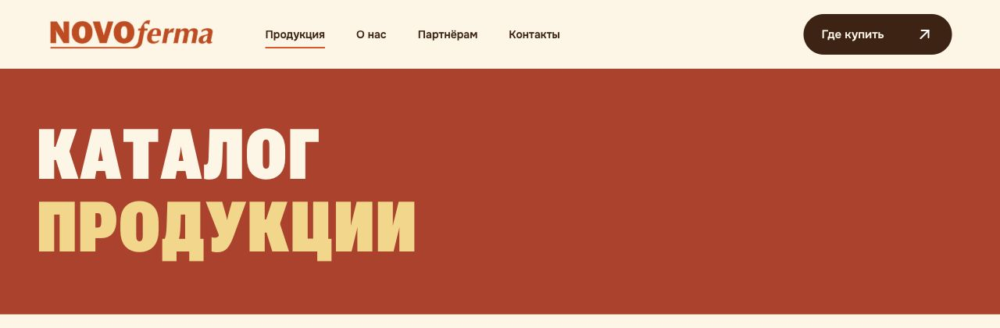
Каталог: Roboto Flex Protein 850
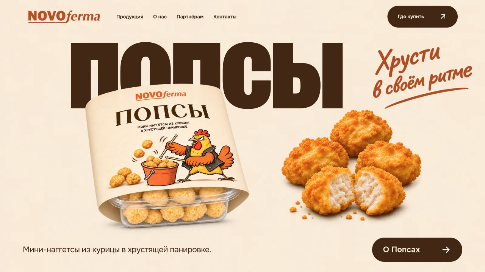
Главный экран: Roboto Flex Protein 850
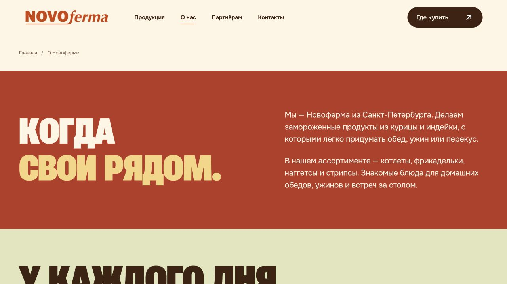
О нас: то же семейство под именем Novoferma About
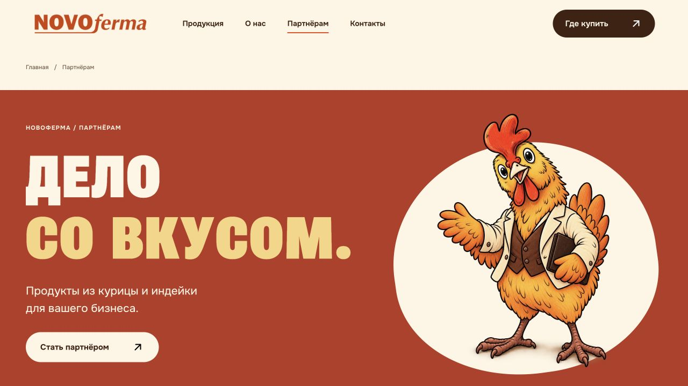
Партнёрам: Roboto Flex Protein 850
2. Расхождения в основных разделах
Оранжевый блок и контакты выглядят мягче из-за Rubik 900. Главный заголовок Где купить использует Onest 700 — это третье семейство крупного заголовка.
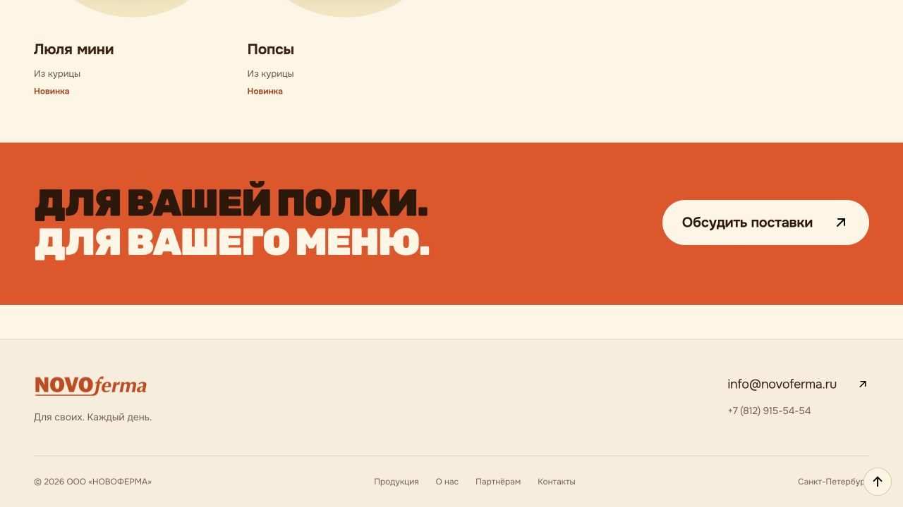
Для вашей полки / Для вашего меню: Rubik 900
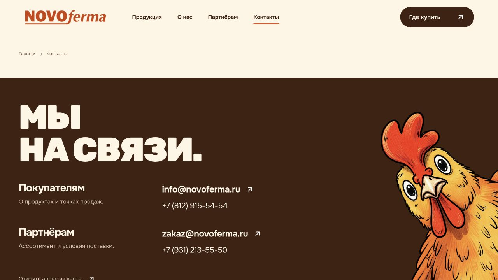
Контакты: Rubik 900
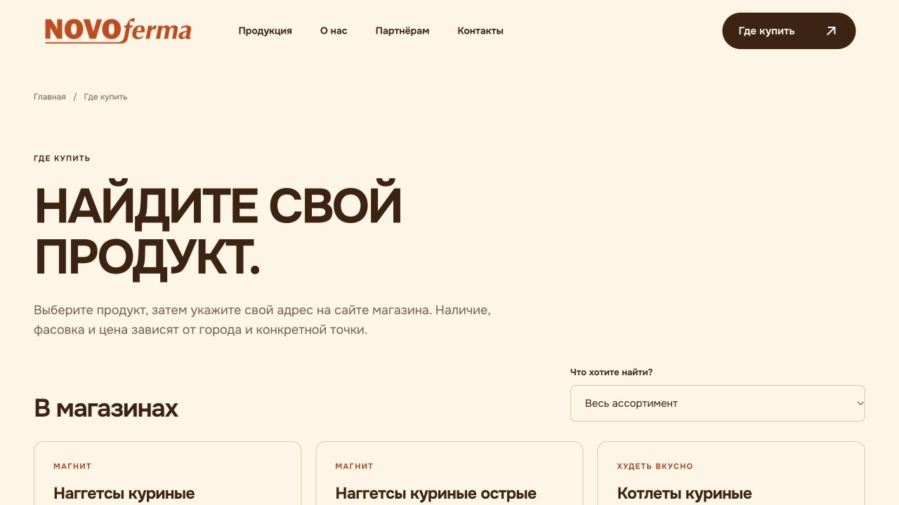
Где купить: Onest 700
3. Страницы продуктов
Общий стиль всех 18 главных заголовков — Rubik 900. На четырёх представителях подтверждено отображение в браузере. Внутренние промозаголовки новинок также используют Rubik; поэтому Попсы на главной и Попсы на отдельной странице сейчас набраны разными шрифтами.
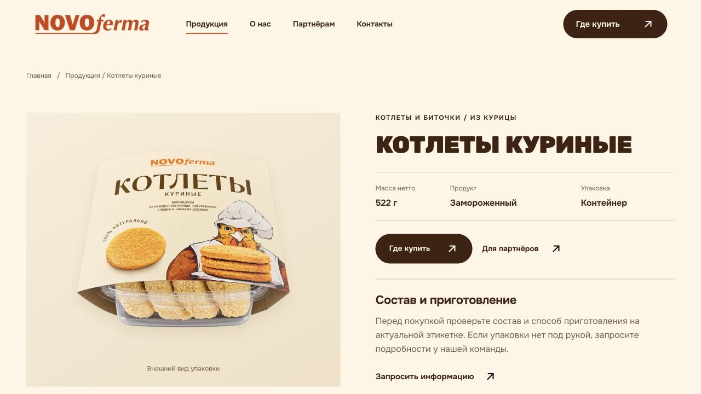
Котлеты куриные: Rubik 900
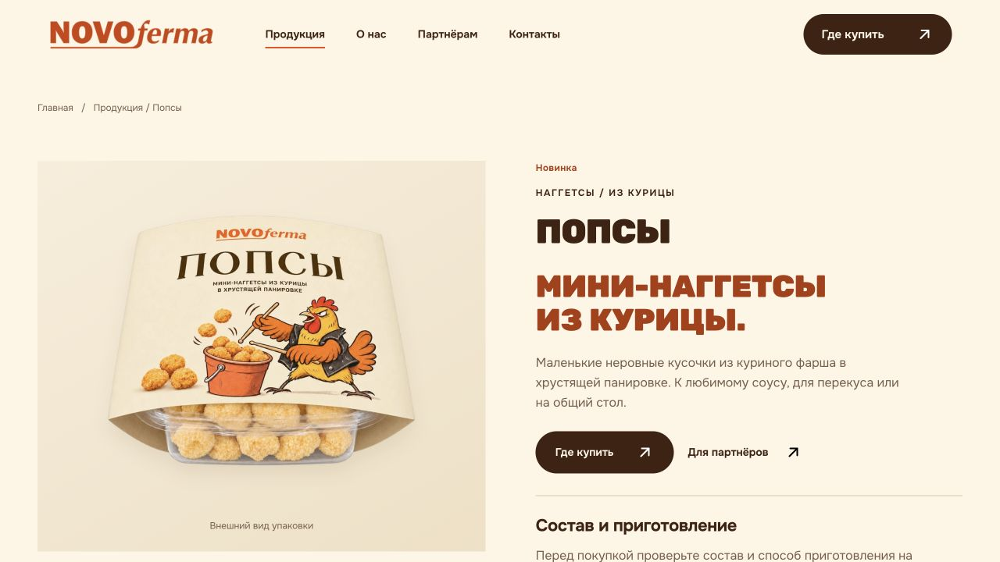
Попсы: Rubik 900
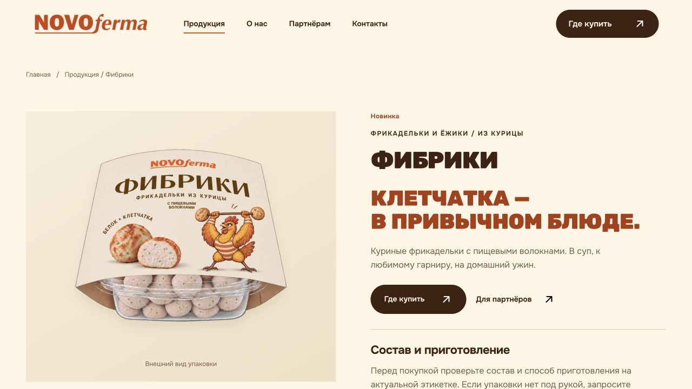
Фибрики: Rubik 900
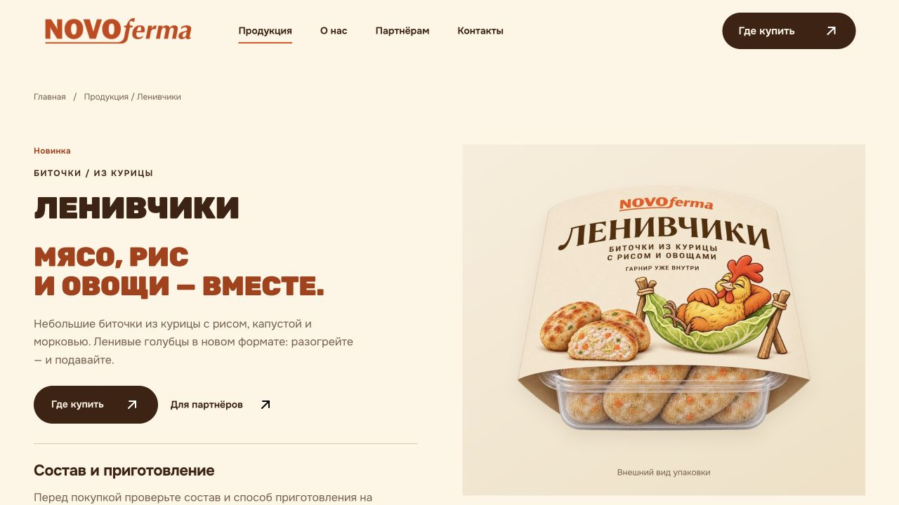
Ленивчики: Rubik 900
Что проверено и что остаётся
Встроенный браузер, локальная актуальная версия output/concept, экран 1280×720. Снимки сделаны в этом запуске и проверены визуально. Для 10 страниц сохранены вычисленные браузером стили H1/H2/H3; общие правила и подключения просмотрены во всех 18 страницах продуктов. Файлы сайта и генератор не менялись; публикация не запускалась.
Это аудит согласованности шрифтов. Мобильные переносы, увеличение текста и поведение после будущей замены пока не проверены. При внедрении проверить читаемость длинных заголовков, отсутствие обрезки и наложений на узком экране и при увеличении текста. Полный аудит доступности не проводился.
Причина расхождений — отдельные стили разделов: общий --font-poster по-прежнему указывает на Rubik, а обновлённые разделы задают Roboto Flex напрямую. Названия Novoferma About и Novoferma Protein ссылаются на один и тот же файл.
Источники подключения: style.css:4–9 (Rubik), assets/fonts/font-face.css:2–8 (Onest), catalogue.css:2–5 / about-refinement.css:2–5 (Roboto Flex). Источник оранжевого блока: scripts/build_site.py:94–102. Вычисленные стили браузера.